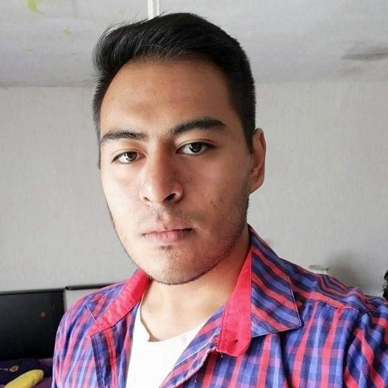

David Alejandro Alvarez Gutierrez
Junior developer with two years of experience in frontend and backend.
Opalo Norte #44, Parques de Zapopan.
10/03/1998
33-11-40-12-41
alejandro_alvarez_gtz@outlook.com

EDUCATION
- 2010 - 2013
Technical high school number 42
- 2013 - 2016
Technical school CBtis 246
Programming Technician
- 2018 - Current degree
Centro de Ciencias Exactas e Ingenieria - CUCEI
Informatics Engineering
EXPERIENCE
- 2017 - 2017
Atel
Teleperformance
- 2018 - 2020
Kybel
Frontend junior developer
PROJECT EXPERIENCE
- Backend and Frontend development of Mar Latino's website
- Frontend development of Clings, a Kybel's local project.
- Frontend development of Pollo Pepe's website.
- Frontend development of Banana's website
LANGUAJES
- Spanish: 90%
- English: 70%
- German: 15%
SOFTWARE SKILLS
- C++: 75%
- .Net: 48%
- Python: 30%
- Html, Css, JS: 80%
PERSONALITY
- Communicative
- Punctual
- Cooperative
- Responsible
PROFESSIONAL INTERESTS
- Become a full stack web developer